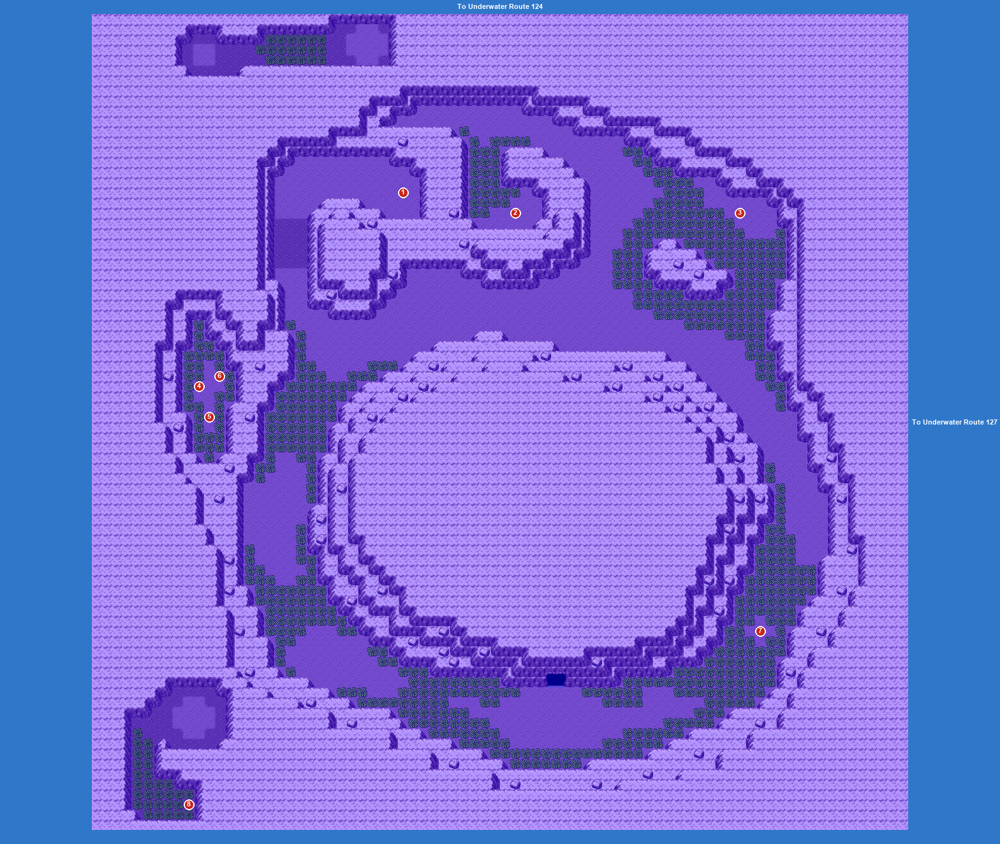

PokémonEMMA'S EMERALD
OFFICIAL Strategy Guide
Underwater Route 126
‹ WalkthroughOptional area
TIP
No wild Pokémon in the grass here. Time of day: M = morning (6–10), D = day (10–19), E = evening (19–20), N = night (20–6).
Items
| 1Heart Scale (hidden) |
| 2Ultra Ball (hidden) |
| 3Stardust (hidden) |
| 4Pearl (hidden) |
| 5Iron (hidden) |
| 6Yellow Shard (hidden) |
| 7Big Pearl (hidden) |
| 8Blue Shard (hidden) |
Catch ’Em All! Surfing
 | Clamperl: | LV20–30 | Common | MDEN |
 | Gyarados: | LV24–26 | Common | MDEN |
 | Tatsugiri (Curly): | LV30–32 | Common | MDEN |
 | Brionne: | LV21–35 | Common | MDEN |
 | Carvanha: | LV26–27 | Common | MDEN |
 | Surskit: | LV30–32 | Uncommon | MDEN |
 | Relicanth: | LV31–32 | Uncommon | MDEN |
 | Corphish: | LV22 | Uncommon | MDEN |
 | Wimpod: | LV33–35 | Rare | MDEN |
 | Quagsire: | LV34–35 | Rare | MDEN |
 | Shellos (West): | LV27–28 | Rare | MDEN |
 | Finneon: | LV29 | Rare | MDEN |
 | Lombre: | LV32–33 | Rare | MDEN |
 | Corsola: | LV27–29 | Rare | MDEN |
 | Wishiwashi (Solo): | LV30–32 | Rare | MDEN |
‹ WalkthroughOptional area
150